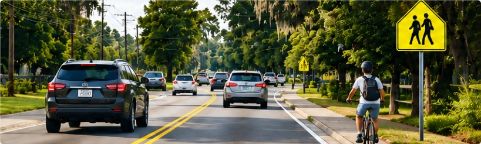
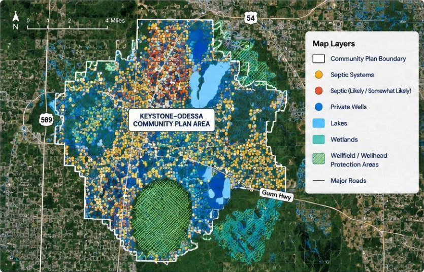
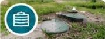
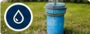
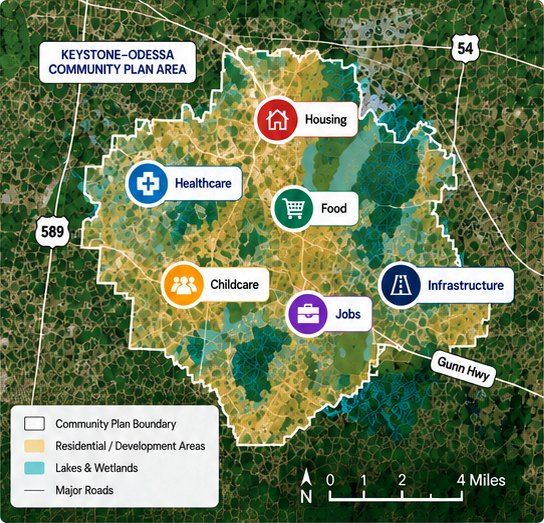
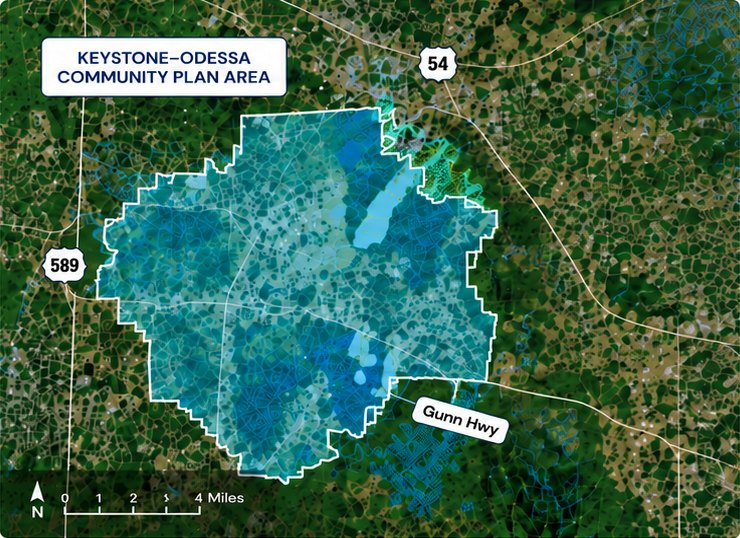
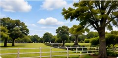

From roads and water to growth, housing, infrastructure and essential services, the current Community Plan creates real challenges for today’s residents. Explore each issue below to see how these problems affect our community and why change is needed.
Roads must meet the safety needs of today’s community

Our road network serves residents, commuters, students, emergency responders, deliveries and essential services. Safe and reliable roads are critical for everyone in Keystone–Odessa.
Gunn Highway
A key corridor with specific restrictions under the current Community Plan.
Street Lighting
Limited by current rules, even where lighting could improve safety.
Traffic & Intersections
Growing traffic and safety concerns at key intersections.
Walking & Biking
Limited pedestrian and bicycle facilities along many roads.
Emergency Access
Road conditions can affect emergency response times.
What are we protecting if we don’t put clean water first?
Private wells. Septic systems. Lakes. Wetlands. The water beneath our homes matters far more than a planning label. Protecting Keystone–Odessa should mean protecting the people who live here, not treating its Community Plan as untouchable.

Data scope: 7,191 administrative records for ZIP 33556, not a count of systems within the Community Plan boundary. 806 construction/repair records, 1998–2023, are not failure counts. The method behind the 3,087 figure remains unverified.
7,191
records analyzed
Septic records reviewed to assess current conditions.
3,087
properties in the three septic groups
in the three septic groups (Known, Likely, Somewhat Likely).
806
septic construction/repair records
Application dates from 1998–2023.
Key water & septic issues

Septic Concentration
Septic Repairs

Private Wells
Groundwater
Wellfields, Lakes, and Wetlands
Water and Wastewater Infrastructure
Keep what makes Keystone–Odessa special. Change the plan that shapes its future.
Our petition calls for removing the Keystone–Odessa Community Plan and relying on the County’s broader planning framework. Our priority: health, safety and welfare.
You chose rural living. Should that mean compromising on safety?
A longer drive for groceries may be a choice you’re happy to make. But protecting rural character should never be an excuse to dismiss safe roads, essential services or responsible infrastructure. Loving Keystone–Odessa does not mean treating its Community Plan as untouchable.

Illustration Schematic service pins, not verified locations.
01
The question isn’t how far you drive. It’s how safely you get there.
Distance alone tells only part of the story. Road conditions, crossings, lighting and safe connections matter too.
02
Essential services are more than shopping convenience.
Healthcare, childcare and everyday necessities belong in the discussion about a community’s future. A rural setting does not make those needs disappear.
03
Protect the countryside. Don’t treat the plan as sacred.
A planning document is a policy choice. Supporting the landscape does not require supporting every restriction written into that document.
We want the Keystone–Odessa Community Plan retired.
Our priority is a planning framework that puts health, safety and welfare at the centre of decisions about our community.
The Community Plan was created for a Keystone–Odessa of more than two decades ago
The Keystone–Odessa Community Plan was adopted in 2001 and continues to place a specific policy layer over the area. During that time, the community’s population, traffic, infrastructure needs, development conditions, and everyday needs have changed.

2001
Community Plan
The Community Plan was adopted.

Today
More than two decades later
The community’s population, traffic, infrastructure needs, development conditions, and everyday needs have changed.
2026
Current status
According to the public-record response, the BOCC had not requested the Planning Commission to complete a new update to the Keystone–Odessa Community Plan.
Areas affected by this policy layer
Roads & Transportation
Rules related to road expansion, lighting, and transportation characteristics.
Water & Wastewater
Rules and exceptions related to water and wastewater infrastructure.
Growth & Housing
Specific requirements related to density, lot size, and development.
Infrastructure & Services
Rules that affect how the community can respond to infrastructure and service needs.
No plan is more important than the people it serves.
Your roads. Your water. Your daily life. The Keystone–Odessa Community Plan influences decisions across all three. A document with that much influence should earn its place by serving the community, not remain beyond question.
One plan. Decisions that reach into everyday life.
Roads & Safety
Road Rules
What good is rural character without safe ways to get around?
Lighting, crossings, road improvements and reliable access belong at the heart of planning for people.
Traffic
Lighting
Ability to Improve Roads
Safety
Mobility
Emergency Access
Water & Septic
Water & Wastewater Rules
Are we protecting our water—or defending a set of rules?
Water and wastewater policies should be judged by how well they protect people and the environment.
Septic
Wells
Groundwater
Wellfield
Health
Water Resources
Environment
Growth & Daily Life
Land Use & Development Rules
Should people have to fit the plan, or should the plan serve people?
Housing, infrastructure and access to essential services shape everyday life. Those needs deserve more than a rural label.
Housing
Infrastructure
Service Locations
Travel Distance
Access
Quality of Life
Welfare
Health.
Safety.
Welfare.
These should be the priorities.
The illustration connects policy topics and priorities; it does not establish that the Plan caused harm.
We believe Keystone–Odessa needs a different planning approach. Sign the petition to retire the Community Plan and put health, safety and welfare at the centre of the County’s decisions.